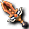
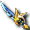
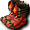
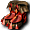
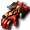
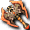

出現怪物
 哥布林（劇毒師）
哥布林（劇毒師）
| 哥布林（劇毒師） | Lv | AC | MC | AAR | SAR | 掉落物品 |
| HP:119817 | 120 | -65 | -75 | 66 | 66 |  被封印的斯科爾菲吉護肩、 被封印的斯科爾菲吉護肩、 被封印的斯科爾菲吉寶珠、 被封印的斯科爾菲吉寶珠、 被封印的斯科爾菲吉匕首、 被封印的雷歐加爾特劍、忘卻的雷歐加爾特女衫（女）、 忘卻的雷歐加爾特頭盔（女）、 忘卻的雷歐加爾特頭盔（女）、 忘卻的雷歐加爾特頭帶（女）、 忘卻的雷歐加爾特頭帶（女）、 野獸護脛、 野獸護脛、 獵人鐵手套、鳥耳環、 獵人鐵手套、鳥耳環、 門格爾頭盔（女）、 門格爾頭盔（女）、 斯維特頭帶（女）;戰士武器碎片、魔術師武器碎片、 斯維特頭帶（女）;戰士武器碎片、魔術師武器碎片、 阿修羅武器碎片 阿修羅武器碎片 |
| 經驗值 | 名聲值 | 金錢 | 攻擊屬性 | 防禦屬性 | ||
| 30500 | 5100 | 0 | 隨機 | 隨機 | ||
| STR | DEX | INT | WIS | CON | ||
| 148 | 176 | 117 | 99 | 99 |
備註 MP/SP傷害 猛毒感染
哥布林（光戰士）
| 哥布林（光戰士） | Lv | AC | MC | AAR | SAR | 掉落物品 |
| HP:138397 | 120 | -65 | -75 | 66 | 66 |  完整頭部電漿、 完整頭部電漿、 被封印的斯科爾菲吉豎琴、忘卻的美麗龍珠、忘卻的雷歐加爾特劍、 被封印的斯科爾菲吉豎琴、忘卻的美麗龍珠、忘卻的雷歐加爾特劍、 忘卻的雷歐加爾特護肩、眩光圈、空氣圈、憤怒寶珠、 忘卻的雷歐加爾特護肩、眩光圈、空氣圈、憤怒寶珠、 寇德涅克法杖、電漿捲軸 寇德涅克法杖、電漿捲軸 |
| 經驗值 | 名聲值 | 金錢 | 攻擊屬性 | 防禦屬性 | ||
| 30200 | 7000 | 0 | 隨機 | 隨機 | ||
| STR | DEX | INT | WIS | CON | ||
| 150 | 176 | 99 | 101 | 52 |
備註 MP/SP傷害 劍纏 迴避破壞 瀕死時逃跑
 梅修雷姆
梅修雷姆
| 梅修雷姆 | Lv | AC | MC | AAR | SAR | 掉落物品 |
| HP:134738 | 120 | -47 | -97 | 47 | 47 |  秘術瑪娜莉克、 秘術瑪娜莉克、 秘術赫爾莉克、尚斯寵物、 秘術赫爾莉克、尚斯寵物、 忘卻的斯科爾菲吉魔力耳環、 忘卻的斯科爾菲吉魔力耳環、 忘卻的斯科爾菲吉布利特耳環、 忘卻的斯科爾菲吉布利特耳環、 被封印的斯科爾菲吉長靴、 被封印的斯科爾菲吉鞋、 染色劑[深綠色]、阿修羅武器碎片 染色劑[深綠色]、阿修羅武器碎片 |
| 經驗值 | 名聲值 | 金錢 | 攻擊屬性 | 防禦屬性 | ||
| 24600 | 6800 | - | - | 隨機 | ||
| STR | DEX | INT | WIS | CON | ||
| 158 | 138 | 93 | 116 | 99 |
備註 MP/SP傷害 窒息 遠距離攻擊
格拉姆
| 格拉姆 | Lv | AC | MC | AAR | SAR | 掉落物品 |
| HP:537894 | 120 | -57 | -107 | 47 | 47 |  忘卻的斯科爾菲吉鐵手套、 忘卻的斯科爾菲吉鐵手套、 忘卻的斯科爾菲吉手套、 忘卻的斯科爾菲吉護腕、 忘卻的斯科爾菲吉護腕、 忘卻的斯科爾菲吉力量戒指、 忘卻的斯科爾菲吉力量戒指、 忘卻的斯科爾菲吉魔力戒指、 忘卻的斯科爾菲吉魔力戒指、 忘卻的斯科爾菲吉布利特戒指、 忘卻的斯科爾菲吉布利特戒指、 忘卻的斯科爾菲吉力量耳環、忘卻的斯科爾菲吉魔力耳環、忘卻的斯科爾菲吉布利特耳環、斯科爾菲吉鐵手套、電漿捲軸、 忘卻的斯科爾菲吉力量耳環、忘卻的斯科爾菲吉魔力耳環、忘卻的斯科爾菲吉布利特耳環、斯科爾菲吉鐵手套、電漿捲軸、 元素戒指、 元素戒指、 普羅托尼姆護脛、 普羅托尼姆護脛、 染色劑[黑色]、 染色劑[黑色]、 預言者武器碎片 預言者武器碎片 |
| 經驗值 | 名聲值 | 金錢 | 攻擊屬性 | 防禦屬性 | ||
| - | - | - | - | - | ||
| STR | DEX | INT | WIS | CON | ||
| 162 | 138 | 97 | 137 | 103 |
備註：重生間隔約1小時
 提艾露莉
提艾露莉
| 提艾露莉 | Lv | AC | MC | AAR | SAR | 掉落物品 |
| HP:106182 | 120 | -29 | -109 | 99 | 61 |  忘卻的雷歐加爾特力量耳環、 忘卻的雷歐加爾特力量耳環、 忘卻的雷歐加爾特魔力耳環、 忘卻的雷歐加爾特魔力耳環、 被封印的雷歐加爾特鞋、 被封印的雷歐加爾特鞋、 被封印的雷歐加爾特長靴、獵人鐵手套、染色劑[神秘紫];阿修羅武器碎片 被封印的雷歐加爾特長靴、獵人鐵手套、染色劑[神秘紫];阿修羅武器碎片 |
| 經驗值 | 名聲值 | 金錢 | 攻擊屬性 | 防禦屬性 | ||
| 24800 | 7100 | - | - | 隨機 | ||
| STR | DEX | INT | WIS | CON | ||
| 157 | 192 | 118 | 159 | 87 |
備註 風之衝擊(遠距離攻擊)
拉艾爾
| 拉艾爾 | Lv | AC | MC | AAR | SAR | 掉落物品 |
| HP:517318 | 120 | -39 | -117 | 99 | 61 |  忘卻的雷歐加爾特鐵手套、 忘卻的雷歐加爾特鐵手套、 忘卻的雷歐加爾特手套、忘卻的雷歐加爾特護腕、 忘卻的雷歐加爾特手套、忘卻的雷歐加爾特護腕、 忘卻的雷歐加爾特力量戒指、 忘卻的雷歐加爾特力量戒指、 忘卻的雷歐加爾特魔力戒指、 忘卻的雷歐加爾特魔力戒指、 忘卻的雷歐加爾特布利特戒指、忘卻的雷歐加爾特力量耳環、忘卻的雷歐加爾特魔力耳環、 忘卻的雷歐加爾特布利特戒指、忘卻的雷歐加爾特力量耳環、忘卻的雷歐加爾特魔力耳環、 忘卻的雷歐加爾特布利特耳環、雷歐加爾特鐵手套、雷歐加爾特手套、 忘卻的雷歐加爾特布利特耳環、雷歐加爾特鐵手套、雷歐加爾特手套、 聖者之忍、 聖者之忍、 染色劑[白金金髮]、電漿捲軸、元素戒指、元素護脛 染色劑[白金金髮]、電漿捲軸、元素戒指、元素護脛 |
| 經驗值 | 名聲值 | 金錢 | 攻擊屬性 | 防禦屬性 | ||
| - | - | - | - | - | ||
| STR | DEX | INT | WIS | CON | ||
| 166 | 192 | 130 | 178 | 92 |
備註：重生間隔約1小時
冷酷的哥布林
| 冷酷的哥布林 | Lv | AC | MC | AAR | SAR | 掉落物品 |
| HP:631804 | 120 | -35 | -105 | 66 | 66 | 忘卻的斯科爾菲吉豎琴、 忘卻的雷歐加爾特長槍、 忘卻的雷歐加爾特長槍、 忘卻的雷歐加爾特彎刀、忘卻的雷歐加爾特護肩、被封印的雷歐加爾特劍、 忘卻的雷歐加爾特彎刀、忘卻的雷歐加爾特護肩、被封印的雷歐加爾特劍、 被封印的斯科爾菲吉劍卡、被封印的雷歐加爾特頭盔（男）、 被封印的斯科爾菲吉劍卡、被封印的雷歐加爾特頭盔（男）、 被封印的雷歐加爾特兜帽袍（女）、 被封印的雷歐加爾特兜帽袍（女）、 被封印的斯科爾菲吉女衫（女）、 被封印的斯科爾菲吉女衫（女）、 門格爾頭帶（女）、 門格爾頭帶（女）、 根除、眩光圈、黏土圈、鎖圈、水滴圈、空氣圈、元素護脛 根除、眩光圈、黏土圈、鎖圈、水滴圈、空氣圈、元素護脛 |
| 經驗值 | 名聲值 | 金錢 | 攻擊屬性 | 防禦屬性 | ||
| 33100 | 7400 | 15731～ | 隨機 | 隨機 | ||
| STR | DEX | INT | WIS | CON | ||
| 152 | 176 | 94 | 99 | 101 |
備註：重生間隔約1小時
瘋狂的哥布林
| 瘋狂的哥布林 | Lv | AC | MC | AAR | SAR | 掉落物品 |
| HP:961621 | 120 | -10 | -80 | 25 | 30 |  被封印的雷歐加爾特豎琴、被封印的雷歐加爾特長槍、被封印的斯科爾菲吉女衫（女）、 被封印的雷歐加爾特豎琴、被封印的雷歐加爾特長槍、被封印的斯科爾菲吉女衫（女）、 被封印的斯科爾菲吉彎刀、OP斯科爾菲吉盾、鎖圈、 被封印的斯科爾菲吉彎刀、OP斯科爾菲吉盾、鎖圈、 雷亞斯指虎、血腥匕首、狐狸耳、 雷亞斯指虎、血腥匕首、狐狸耳、 離別之淚 離別之淚 |
| 經驗值 | 名聲值 | 金錢 | 攻擊屬性 | 防禦屬性 | ||
| 0 | 0 | 0 | 隨機 | 隨機 | ||
| STR | DEX | INT | WIS | CON | ||
| 159 | 194 | 105 | 103 | 99 |
備註 MP/SP傷害 劍纏(遠距離攻擊)重生間隔約1小時
兇暴的哥布林
| 兇暴的哥布林 | Lv | AC | MC | AAR | SAR | 掉落物品 |
| HP:6423226 | 120 | -70 | -100 | 70 | 70 |  被封印的斯科爾菲吉長槍、被封印的斯科爾菲吉彎刀、被封印的斯科爾菲吉豎琴、被封印的雷歐加爾特長槍、被封印的雷歐加爾特彎刀、被封印的雷歐加爾特豎琴、 被封印的斯科爾菲吉長槍、被封印的斯科爾菲吉彎刀、被封印的斯科爾菲吉豎琴、被封印的雷歐加爾特長槍、被封印的雷歐加爾特彎刀、被封印的雷歐加爾特豎琴、 被封印的斯科爾菲吉布衣（男）、被封印的斯科爾菲吉女衫（女）、 被封印的斯科爾菲吉布衣（男）、被封印的斯科爾菲吉女衫（女）、 被封印的雷歐加爾特布衣（男）、被封印的雷歐加爾特女衫（女）、 被封印的雷歐加爾特布衣（男）、被封印的雷歐加爾特女衫（女）、 斯科爾菲吉盾、眩光圈、黏土圈、鎖圈、水滴圈、空氣圈、染色劑[黑色]、雷霆閃電槍、傷害轉移、元素戒指 斯科爾菲吉盾、眩光圈、黏土圈、鎖圈、水滴圈、空氣圈、染色劑[黑色]、雷霆閃電槍、傷害轉移、元素戒指 |
| 經驗值 | 名聲值 | 金錢 | 攻擊屬性 | 防禦屬性 | ||
| 0 | 0 | 0 | 隨機 | 隨機 | ||
| STR | DEX | INT | WIS | CON | ||
| 161 | 197 | 107 | 105 | 102 |
備註：重生間隔約24小時
掉落備忘
獵人鐵手套
被封印的雷歐加爾特彎刀

被封印的斯科爾菲吉斧